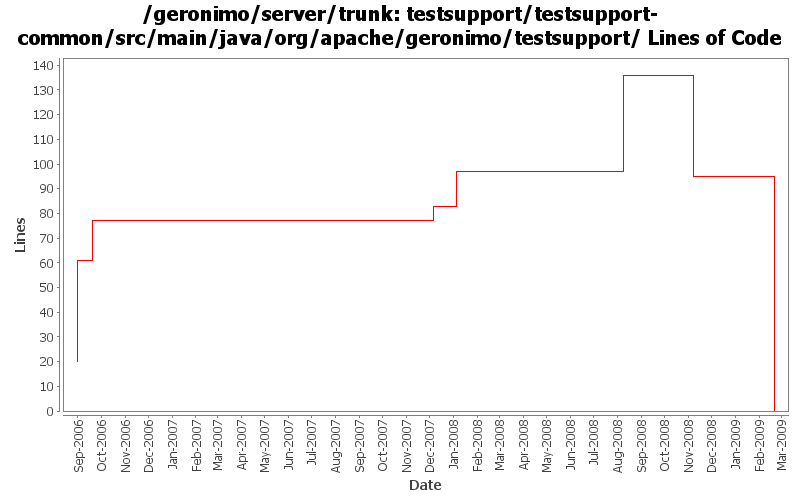

[root]/testsupport/testsupport-common/src/main/java/org/apache/geronimo/testsupport

| Author | Changes | Lines of Code | Lines per Change |
|---|---|---|---|
| Totals | 27 (100.0%) | 184 (100.0%) | 6.8 |
| jdillon | 8 (29.6%) | 50 (27.2%) | 6.2 |
| gawor | 3 (11.1%) | 47 (25.5%) | 15.6 |
| djencks | 9 (33.3%) | 36 (19.6%) | 4.0 |
| kevan | 2 (7.4%) | 31 (16.8%) | 15.5 |
| gdamour | 3 (11.1%) | 20 (10.9%) | 6.6 |
| prasad | 2 (7.4%) | 0 (0.0%) | 0.0 |
GERONIMO-4538 Move stuff around so framework is self contained and builds the framework server. No groupId changes in this revision in case people dont like this change
0 lines of code changed in 7 files:
When a ConfigurationData is loaded from a ConfigurationStore, its dependencies are transformed through the execution of Groovy scripts matching the pattern Dependencies(.*).groovy located in the same directory than the configuration being loaded.
Also a ConfigurationDataTransformer gets attached to the ConfigurationData so that when GBeans are loaded subsequently when the Configuration ClassLoader is available they can be transformed through the execution of Groovy scripts matching the pattern GBeans(.*).groovy located in the same directory than the configuration being loaded.
(GERONIMO-4401) Extension of configuration dependencies and gbeans via Groovy scripts
20 lines of code changed in 3 files:
trim empty text nodes
39 lines of code changed in 1 file:
trim before comparing
2 lines of code changed in 1 file:
Move some dep versions to dm
Add some sanity checks to selenium client muck
3 lines of code changed in 1 file:
More loggers back to static
1 lines of code changed in 1 file:
(GERONIMO-3985) Use SLF4J as the primary logging facade for Geronimo
3 lines of code changed in 1 file:
GERONIMO-3732 steps 1, 2. Move plugin management and some jsr88 base code into a new module
20 lines of code changed in 1 file:
apache harmony fix: compare DOM tree instead of doing simple string comparision
6 lines of code changed in 1 file:
Std props
1 lines of code changed in 1 file:
* moved ExtendedSelenium and SeleniumSupport to TestSupport
* it took along with it the TestNG dependency.
* TestNG dependency no longer needs to be specified in testsuite poms.
0 lines of code changed in 2 files:
GERONIMO-2537 Update more src file headers to be compliant with new apache policy. Also made some updates for consistency
31 lines of code changed in 2 files:
GERONIMO-2415 add xmlbeans test support class
16 lines of code changed in 1 file:
Added comment about BASEDIR and logging initialization order
6 lines of code changed in 1 file:
Adding resolveFile() and resolvePath() helpers
36 lines of code changed in 1 file:
(GERONIMO-2352) Hooking up testsupport to the main build
Moved modules/geronimo-testsupport to testsupport/testsupport-common & hook up testsupport-common as a default test dep for all modules
0 lines of code changed in 2 files: